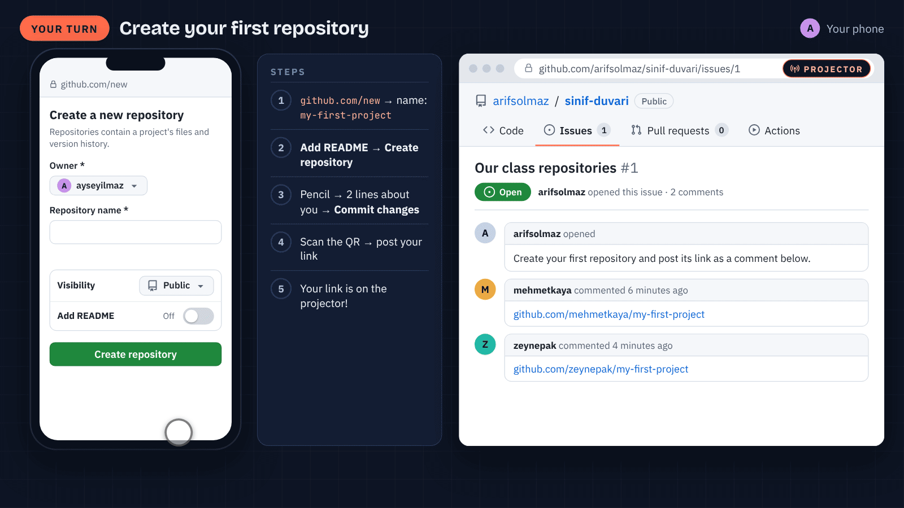

MECHATRONICS · INTRO TO GITHUB · 45 MINUTES
What's GitHub good for?
Never lose a project, work as a team, show what you've built. No terminal: it all happens in the browser.
Arif Solmaz · İSTÜN Mechatronics Engineering
TODAY
The plan for 45 minutes
Opening · 7 min
The messy folder, and what GitHub is
Six benefits · 24 min
Each one: animation + live demo
Your turn · 9 min
Your first repository, on your phone
Closing · 5 min
Recap and this week's task
Have your phone and your GitHub account ready: by the end of class you'll create your first repository.

WHAT IS GITHUB?
An online folder for your projects, and then some
01
A folder
Code, circuit diagram, report, photos: all in one place, online.
02
A time machine
Every change is recorded; you can always look at an older version.
03
A meeting place
Your team's to-do list, and a showcase for what you've built.
No terminal, no commands, no coding experience needed: today everything happens in the browser.
GLOSSARY
Four words are enough
repository
your project's folder online
the files + their whole history
commit
a save point
with a short note: what changed?
issue
a task or a bug note
it gets a number: #1, #2…
README
your project's front page
what, why, how: the first thing people read


BENEFIT 6 · GITHUB EDUCATION
As a student, most of it is free
GitHub Copilot Student
An AI assistant that suggests code as you type.
GitHub Pro
Free for as long as you're a student.
70+ partner offers
Student deals on design, cloud and learning tools.
YOUR TURN · 9 MINUTES
Create your first repository
- github.com/new → name: my-first-project
- Add README: On → Create repository
- Pencil on the README → 2 lines about you → Commit changes
- Scan the QR → post your repository link → Comment
Class page: github.com/arifsolmaz/
sinif-duvari/issues/1


THIS WEEK
Put one of your projects on GitHub
1
Pick a project
A robot, an assignment or a club project: code, diagram, photo.
2
Write a README
What it does, the parts, how it works, a photo.
3
Share the link
Post it as a comment on the class page.
One more step: GitHub Skills · Introduction to GitHub, in the browser, under an hour · github.com/skills/introduction-to-github
Thank you
repository · commit · issue · README
Questions?